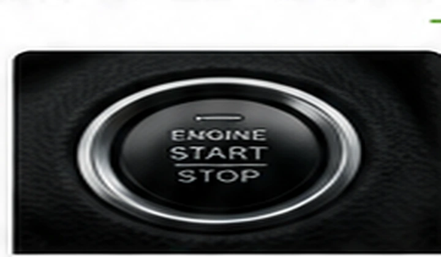

Common symptoms
- No crank when the key is turned
- Engine cranks but will not start
- Starts only intermittently
- Starts and immediately stalls

When a vehicle will not start, the cause may be electrical, fuel-related, mechanical, security-related or a control-system issue. Oakline tests the systems required for the engine to crank and run.
Oakline provides mobile testing at homes and workplaces throughout Fayetteville and nearby communities.
You get a test-based answer on what is preventing the vehicle from starting and what should be repaired next.
Serving Fayetteville, Hope Mills, Raeford, Spring Lake, Stedman, Eastover and surrounding areas.